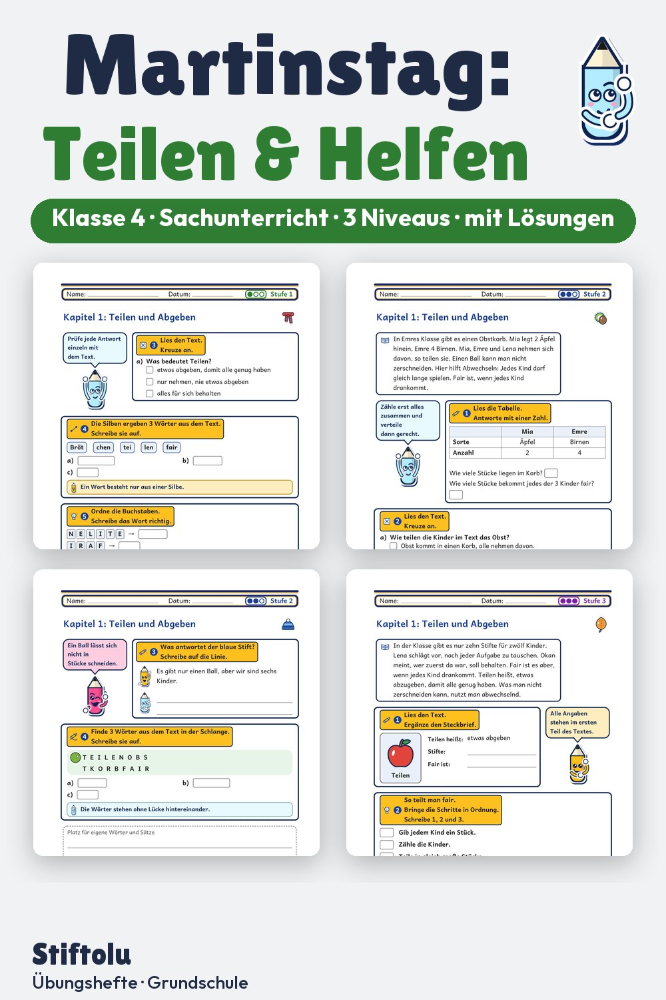

Werbung · Übungsheft von Stiftolu
Martinstag im Sachunterricht Klasse 4: Teilen, Helfen und Kinderrechte

Was bedeutet Teilen, und wer braucht gerade Hilfe? Rund um den Martinstag denken Viertklässler über das Zusammenleben nach, lesen über Kinderrechte und lernen den Brauch des Laternenumzugs kennen. Auf 48 Seiten in drei Niveaus, mit Lösungen und Handreichung, erhältlich auf eduki.